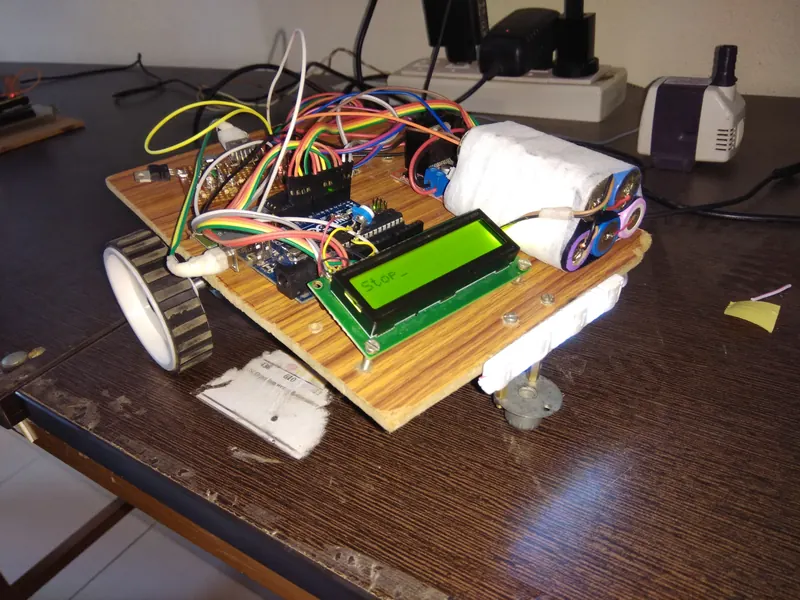
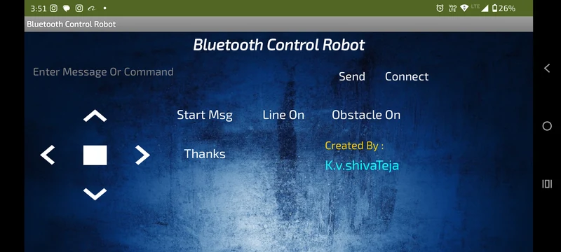
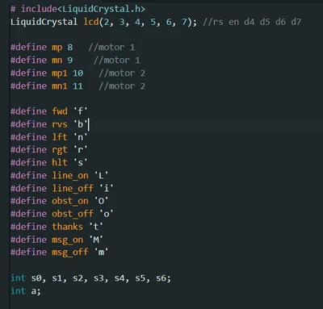
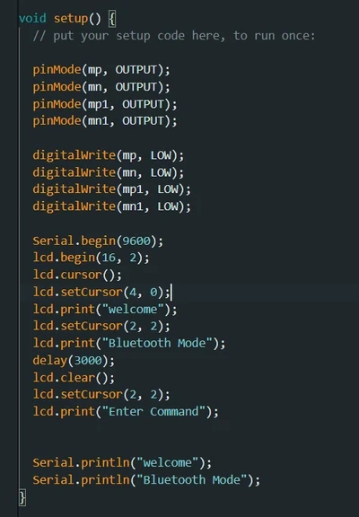
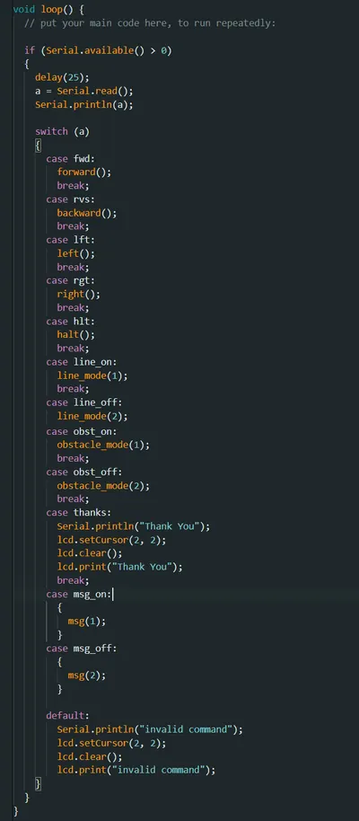

U10 · B.Tech mini project
Bluetooth Multi-Task Rover
One chassis, three behaviours — manual drive from an Android app, line following, and obstacle avoidance — with mode and message display on an onboard LCD.

Three robots in one
The rover takes single-character commands over Bluetooth from an Android app and switches between three modes: manual drive, line following on infrared sensors, and obstacle avoidance on ultrasonic ranging.
A 16×2 LCD shows the current mode, live sensor state, or whatever text you send it from the phone — which turned out to be the feature everyone actually wanted to play with.
How it's written
Arduino C++ on an Uno, motors through a dual H-bridge. The mode switch is a state machine so transitions are clean rather than leaving a motor latched from the previous mode.
One function per behaviour over shared drive primitives — which is what made it easy to bolt a vacuum mechanism onto the same codebase for the cleaning robot.
Gallery



